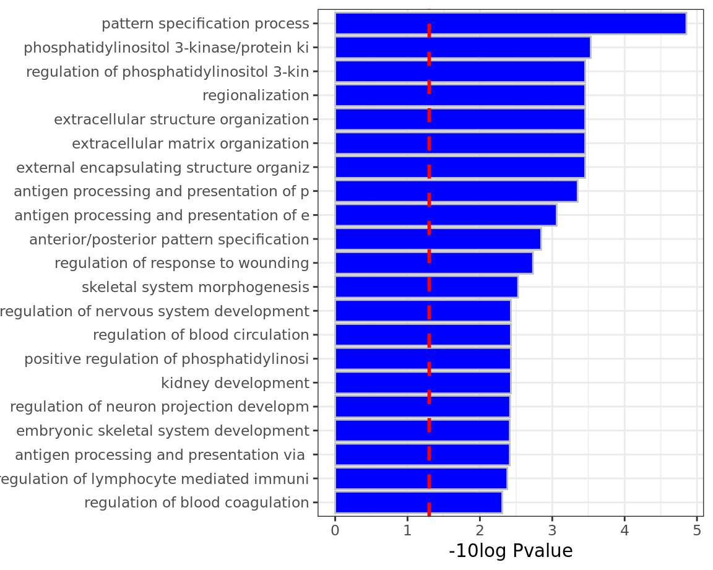

Classical over-representation analysis
A traditional way to evaluate pathway-level changes is through over-representation analysis, which tests whether a predefined gene set (such as a pathway or functional category) contains more regulated genes than expected by chance. This approach begins by defining a list of regulated genes based on fold-change and significance thresholds. For each gene set, a 2×2 contingency table is constructed, counting how many genes are (i) regulated vs. not regulated and (ii) inside vs. outside the gene set. A Fisher’s exact test is then applied to this table to determine whether regulated genes are statistically enriched in the pathway. Gene sets with significant p-values indicate biological categories that are over-represented among the regulated genes, suggesting that these pathways may be functionally involved in the experimental response.
Example of 2×2 contingency table
Has GO term |
Does not have GO term |
Total |
|
|---|---|---|---|
Is regulated |
100 |
200 |
300 |
Not regulated |
300 |
10,000 |
10,300 |
Total |
400 |
10,200 |
10,600 |
From this table we can make the following calculations
Odds ratio ≈ (100 × 10,000) / (200 × 300) = 1,000,000 / 60,000 ≈ 16.7, indicating that genes with the GO term are ~16.7 times more likely to be regulated than genes without the term.
Fisher’s exact test on this table yields a highly significant p-value (p ≪ 0.001; typically reported as p < 1e-10 or smaller for tables of this size), supporting a strong over-representation of regulated genes among those annotated with the GO term.
In this example, these numbers indicate a statistically significant enrichment of the GO term among regulated genes.
This analysis can be repeated for multiple pathways and the most enriched pathways can be retrieved in this way. These results can be summarized in the following graph.

A bar plot summarizing Gene Ontology (GO) over-representation analysis highlights biological processes, molecular functions, or cellular components that are statistically enriched among a selected set of genes, such as differentially expressed genes. Each bar corresponds to a GO term, with the y-axis listing the enriched terms and the x-axis showing the –log10 adjusted p-value, which reflects the strength of enrichment after correcting for multiple testing. Longer bars therefore indicate GO terms with stronger statistical support.
This visualization facilitates rapid identification of dominant biological themes in the data. Related GO terms often appear together, pointing to shared underlying processes, and the ranking by adjusted p-value helps prioritize terms that are most robustly enriched. Because the analysis is based on a predefined gene set, the bar plot provides a higher-level, functional interpretation that complements gene-level differential expression results.
Interpretation of GO bar plots depends on the gene universe, the selection criteria for the input gene list, and the GO annotation database used. Different thresholds for differential expression or alternative background sets can change which terms appear enriched and their relative significance. In addition, GO terms are hierarchically related and partially redundant, so enriched terms should be viewed as overlapping descriptions of biological themes rather than independent findings. As such, these plots are best used for summarizing trends and generating hypotheses, not as definitive proof of specific biological mechanisms.